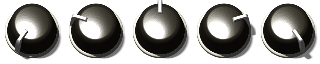
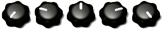
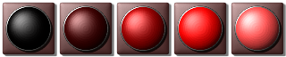

KnobMan3D is a 3D modeling tool for knob-filmstrip-image design.
Even the modeling is performed with combination of 3D objects, output will be done with 2D image files.
Especially, aiming the 'Animation knob bitmap' that will be used in the VST audio effects/synth development.
Each animation frame will be vertical / horizontal stitched, or combine to one AnimationGIF format.
機能
複数の基本オブジェクトを組み合わせて画像を作成します
作成した画像はPNGまたはアニメーションGIFで出力できます
各オブジェクトに回転やズーム等のアニメーションエフェクトを付ける事ができます
作成サンプル:



Function
Create image with combination of multiple basic 3D objects.
Created images can be output as stitched PNG or AnimationGIF format.
Each 3D objects can be animation effected like rotation, zooming and so on.
KnobMan3D is a web applicaiton, you need just a browser to access to the URL.
Browser should be latest Chrome, Firefox or Edge.
If you use Mac, latest 'El Capitan' is needed. May be some color will not be displayed normally in Yosemite.
Because of optimizing issue, Firefox or Edge might be slow response when editing parameters. Using Chrome or setting "Shadow" in Rendering pane to "0" might be a help.
There are four panes and Command-menu in UI screen. Followings are description of these.
Object list
The list of deployed basic objects. Though there are three objects in default, you can add objects by menu. Currently, maximum number of objects is 32.
Object parameter
The shapes or colors of basic objects settings.
Effects
Additional parameters for basic objects that allows animation e.g., rotations, color changing or so.
Rendering
Display the rendering result. Also it has global settings of lighting or camera.
These are file or object manipulation command buttons.
Command
Description
New
Clear current data.
Load
Open a dialog for data-load that saved by 'SaveAsURL' command.
If the URL is too long for directl open with browser, you should paste the URL to this dialog.
SaveAsURL
Display current modeling data as a URL. Data can be load by opening this URL with a browser.
Note that if the URL become too long to direct open with browser, you should use 'Load' command instead.
Export
Export rendering result as PNG or AnimationGIF. Detail dialog will be open with this button.
Add
Add an object.
Dup
Duplicate current focused object.
Del
Delete current focused object.
Back
Move current focused object up
Fore
Move current focused object down.
Rename
Rename the object. the name will be shown in 'Object List'.
The list of object. The bright line indicate the current focused object.
focused object can be switched by clicking these line.
Object parameter and Effects pane right side will show current focused object parameters.
Check-box on left side switches show/hide of each object.
The shapes or colors are determined by these parameters.
Parameter
Description
Type
Specify the basic shape, "Cylinder", "Cube" or "Circle".
Cylinder
Cube
DivR
Object division number of circumferential direction.
DivH
Object division number of height direction.
Aspect
Specify aspect ratio in X-Y plane (means from just above).
Aspect = -50
Aspect = 0
Aspect = 50
Round
Round the corner (from just above) of 'Cube'. This parameter is not available in other shapes.
Round = 0
Round = 25
Width
Circle width. This parameter is not available in other shapes.
WaveDepth WaveAngle
Waving effect of circumference of "Cylinder". WaveDepth is the amplitude of the wave, and WaveAngle is the number of peaks. This parameter also affect to "Cube" but only for "Rounded" corners.
WaveDepth=20 WaveAngle=5
Deflate
Deflate the top face of the shape. It will come close to cone shape or pyramid shape.
Deflate=30
Smooth
Smoothen the top face.
Smooth=25
Smooth=50
Smooth=100
Height
Specify the height of the object.
Height=10
Height=20
Height=50
Shininess
Specify the reflection of the object.
Shininess=0
Shininess=30
Shininess=100
Texture TexType TexDepth TexZoom
These four parameters specifies the surface texture of the object.
Texture is the bitmap pattern to use.
TexType, "Bump" means the representation as a unevenness of surface, "Normal" means directly use of bitmap as the surface.
TexDepth is the intensity of texture. In "Bump" mode, positive value means convex and negative value means engraved.
These parameters adding more effects to objects. It will makes animation frame by frame e.g. knob-rotation. Almost parameters are consist of pair of values. In default, the left side value will be used. And the value will be interporated between right side value according to frame when you select the '=>' on dropdown.
Parameter
Description
Zoom X / Y / XYSepa
Scale the object size. The 'X' value is used for X and Y in default. X and Y value are independently controlled when checked the 'XYSepa' checkbox.
Offset X / Y
Offset the object position along to the X-axis or Y-axis.
RotateAt KeepDir CenterX CenterY Angle
Rotate the object. CenterX / CenterY specifies the center of rotation, and the Angle specifies the rotation in degree. KeepDir is not yet implemented.
Angle -150=>+150
Combination with OffsetY: Angle -150=>+150 OffsetY 40
Setting same value to OffsetX/Y and CenterX/Y: OffsetX/Y 20/30 CenterX/Y 20/30 Angle -150=>+150
Alpha
Specifies the transparency of the object.
Alpha 0=>100
Brightness
Specifies the brightness of the object color. Come close to black when negative value, and come close to white when positive value.
Brightness -100=>+100
Hue
Specifies the hue of the object color in degree. -360 or +360 means same color as original.
This pane diplay the rendering result. Also has parameters of global lighting etc.
Parameter / command
Description
The sliders and values right/bottom of the rendered image.
Specifies the camera potition.
Reset
Reset the camera position to just above.
Ambient
Ambient light intensity. If 0, the faces out of light direction will be complete black.
Ambient 0
Ambient 50
Intensity
Directional light intensity.
Intensity 0
Intensity 50
Intensity 100
Shadow
Shadow density for background. If 0, The objects will not cast shadow to background plane. Note that this option will needs fairly CPU (especially in Firefox / Edge).
Shadow 0
Shadow 25
Shadow 50
LightDir
Light direction in X-Y plane.
LightDir -45
LightDir +45
LightOffset
Light direction from just above to LightDir direction. 0 means just above, and 90 means edge-on.
LightOffset 0
LightOffset 45
LightOffset 90
CamZoom
Scale the whole scene constructed with multiple objects.
CamZoom 50
CamZoom 100
CamZoom 150
Frame / Animation
Display animated frames according to Effects parameters. The iamge will be automatically animated when the Animation button is pressed.